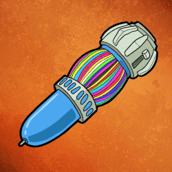
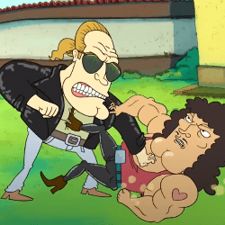
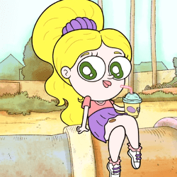
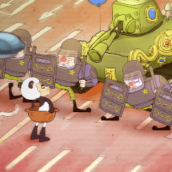
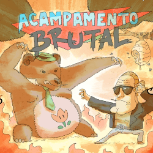
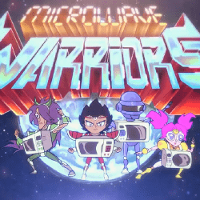
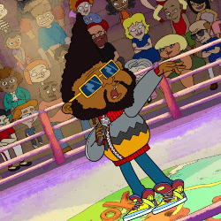
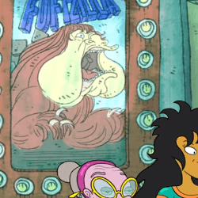

Citações de Algumas Referências Presentes na Série
A Serie Irmão do Jorel é repleta de referências à acontecimentos históricos, objetos de época, filmes e outros desenhos, aqui estão algumas referências:
Caneta de 250 cores
Nesse episódio se faz a referência da caneta de 10 cores que era muito famosa no Brasil.
Steve Magal e Sidney Seagal
Junção de dois ídolos da época Steven Seagal e Sidnei Magal, na série eles são irmãos.
Personagem Ana Catarina
A personagem Ana Catarina é inspirada na apresentadora Angelica.
Gangorras da Revolução
Referência à época da Ditadura Militar no Brasil e a foto marcante do rebelde desconhecido nos protestos de Pequim, nesse episódio Seu Edson conta que lutava contra a repressão através da sua arte.
Excursão alucinante sem freio
Em um momento aparece um panfleto do filme acampamento brutal do Steve Magal com uma imagem dele lutando com o urso semelhante ao Zé Colmeia, na barriga desse urso tem uma flor te fogo igual à do jogo Super Mario.
Microwave Warriors
Os personagens da série preferida do Irmão do Jorel, fazem referência aos personagens do anime “Os cavaleiros do Zodíacos”, popular na época.
A fantástica fábrica de refrigerante

Nesse episódio temos a referência do filme a fantástica fábrica de chocolate em um momento do episódio aparece o Sprokinho mascote do refrigerante Sprok Maça, que é muito semelhante ao Dollynho.
Kassius Kleyton
Nesse episódio Vovó Juju vai participar de uma batalha de rap contra Kassius Kleyton personagem inspirado no Emicida.
Shostiners Shopping
Em uma cena aparece alguns cartazes de filmes e em um deles mostra o filme “Fofizila” fazendo referência ao Fofão e Godzilla.